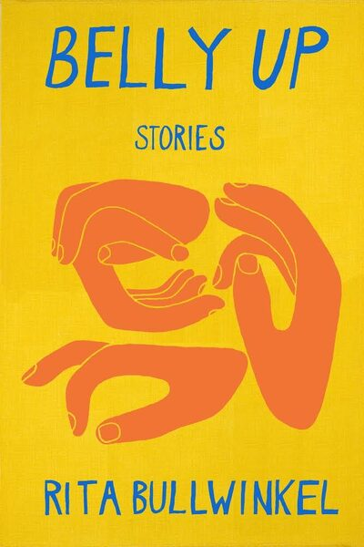
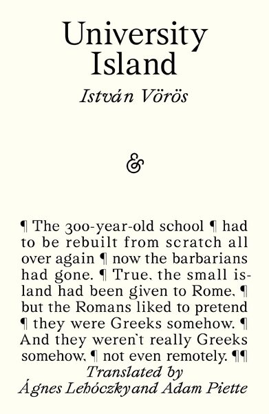

Independent publishing, catalogued
A quiet editorial archive of independent publishers.
8,776 source records from 23 approved presses — every volume traceable to its publisher, every cover shown from the local cache.

Spotlight volume — Astra House
Dad Had a Bad Day
"This book is a triumph. Impeccably, propulsively, and hilariously rendered, Politanoff writes about tennis like Barry Hannah wrote about alcohol—something swift, addictive, fun, life-giving and also totally filthy. Nobody writes like Ashton Politanoff." —Rita Bullwinkel, author of Headshot, a finalist for the Pulitzer Prize “[I] could not put [ Dad Had a Bad Day ] down…[Politanoff's] atmospheric descriptions were spare but sensuous... his dialogue was perfectly rhythmic, to …
Open the volumeRecently imported
12 of 24 sampled volumes

Belly Up

University Island

A Change of Time

Dad Had a Bad Day

Read This! Handpicked Favorites from America’s Indie Bookstores

15 Days: Warsaw to London

"Muslim"
The Mulai
The Calf
And Other Stories
101 Detectives
101 Detectives
Dalkey Archive
Homesick
Homesick
Dalkey Archive
Review of Contemporary Fiction: VIII
Review of Contemporary Fiction: VIII